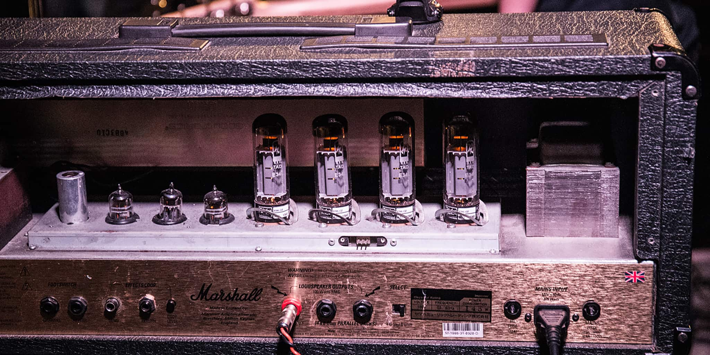

mgn-conveyor
Implement function to slide images or elements in an infinite loop.
https://github.com/frontend-isobar-jp/mgn-conveyor
Default
let conveyor = new mgnConveyor(".j-conveyor");
let btn = document.getElementById('btn');
btn.onclick = () => {
conveyor.flag ? conveyor.Stop() : conveyor.Start();
}
<ul class="j-conveyor">
<li><img src="images/img.jpg" alt=""></li>
<li><img src="images/img3.jpg" alt=""></li>
<li><img src="images/img2.jpg" alt=""></li>
</ul>
<button id="btn">stop / start</button>
.j-conveyor li { display: table-cell; }
.j-conveyor li img { height: 600px; width: auto; max-width: inherit; }
@media only screen and (max-width: 768px) {
.j-conveyor li img { height: 450px; width: auto; }
}
@media only screen and (max-width: 640px) {
.j-conveyor li img { height: 300px; width: auto; }
}
- 
Option
new mgnConveyor(
".j-conveyor2",
{
speed: 100
}
);